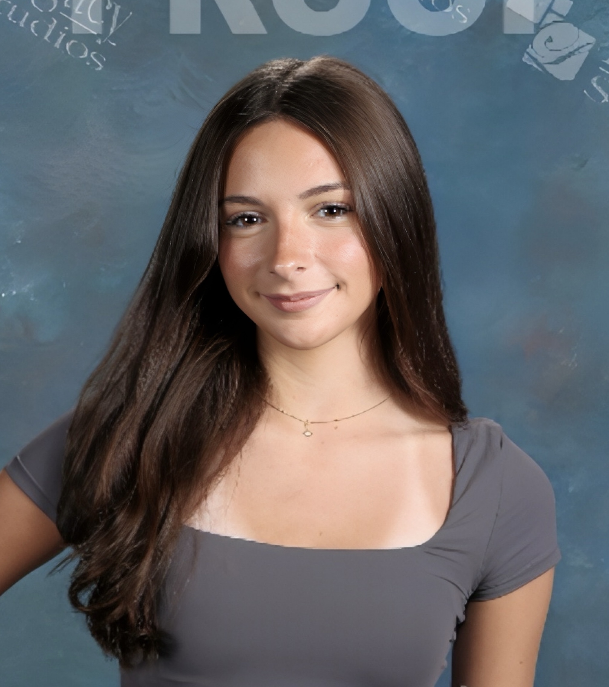
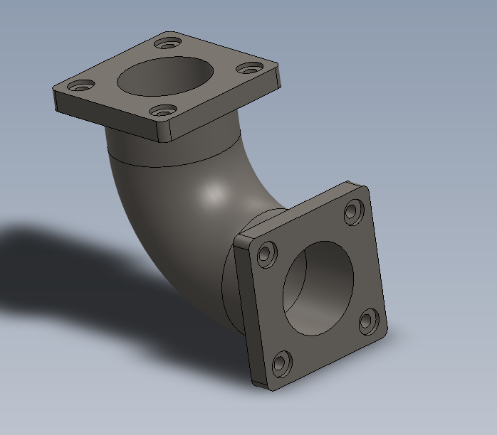
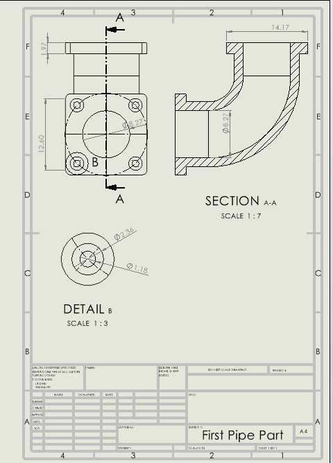

I'm Sophie — a sophomore ME student focused on automotive systems and manufacturing. This is a running record of class projects, CAD work, and the occasional over-engineered side build.

I'm a second-year Mechanical Engineering student at WPI, still early enough in the program that most of what's here is coursework — but it's coursework I chose to push further than the assignment asked for.
I gravitate toward automotive systems: the packaging problems, the tolerance stacking, the way a good part design has to survive contact with a manufacturing line and not just a CAD render. Long term, I want to end up in parts manufacturing, closer to where designs actually get made.
This site is a working portfolio — it'll get denser as the coursework does.
Designed a rigid 90° pipe transition to connect two square-flanged components at a right angle, allowing fluid or gas flow to change direction while maintaining a sealed, bolted connection at each end.


Description of the second project — swap in your own class design project, lab report, or independent build here.
A third slot for a manufacturing-process-focused project — machining, additive, or process planning coursework.
Open to internship conversations, project collaborations, or just talking shop about automotive engineering.